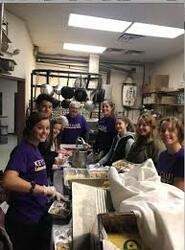
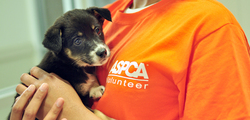

Jocelyn Wang
My name is Jocelyn Wang and I am a first year at the University of California, Riverside. I have two sisters, one of them being my twin. In my free time, I love playing video games such as League of Legends. I love taking care of animals and would love to own pets in the future as well.
Although I have no work experience, I have experience in clubs and organizations in high school. I volunteered regularly for my high school's Key Club, a club devoted to community service. Among the community service I've done, I found myself going back to the animal shelter to volunteer the most. I also tutored kids at other elementary schools and helped out the elderly at retirement homes. I also attended many FBLA meetings, another club at my highschool; I competed semi-regularly for FBLA for four years straight.
My family has always been my motivation to work hard and to strive for the best. To make my parents proud is the least I can do after everything they have given me over the span of eighteen years.
Experience
Key Club
• Volunteered regularly for the club
• Was in the club and paid fees for four years straight
• Helped me gain experience in customer service and developed more social skills
Organized Books
• Returned unwanted books and checked-in books back to their original shelf
• Made sure books had no damage
• Occasionally helped others find books
Education
University of California, Riverside
Portfolio


